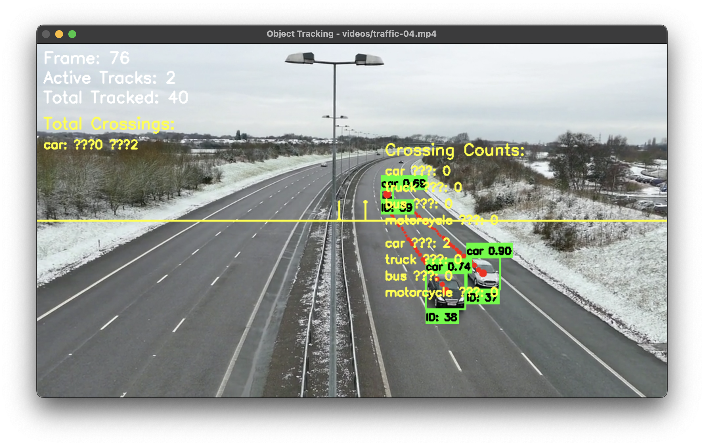

Example Outputs
Traffic Monitoring
Real-time vehicle tracking with motion trails and directional counting statistics.

Line Crossing Analysis
Vehicle counting with class-specific statistics and bi-directional flow analysis.
Traffic Monitoring
from yolozone import ObjectDetector
import cv2
from collections import defaultdict
def process_tracking_video(video_path, detector):
"""Process a video with object tracking"""
cap = cv2.VideoCapture(video_path)
# Get video properties
frame_width = int(cap.get(cv2.CAP_PROP_FRAME_WIDTH))
frame_height = int(cap.get(cv2.CAP_PROP_FRAME_HEIGHT))
# Define counting line in middle of frame
line_start = (0, frame_height // 2)
line_end = (frame_width, frame_height // 2)
# Initialize counts
total_counts = {
'up': defaultdict(int),
'down': defaultdict(int)
}
# Define vehicle classes to track
vehicle_classes = ['car', 'truck', 'bus', 'motorcycle']
while True:
ret, frame = cap.read()
if not ret:
break
# Detect and track objects
results = detector.detect_objects(
frame,
conf=0.3,
track=True # Enable tracking
)
# Update tracks
tracks = detector.tracker.update(results)
# Update line crossings
crossings = detector.tracker.update_line_crossings(
tracks,
line_start,
line_end
)
# Update total counts
for direction in ['up', 'down']:
for cls, count in crossings[direction].items():
total_counts[direction][cls] += count
# Draw detections and tracks
frame, detections = detector.draw_detections(
frame,
results,
classes=vehicle_classes
)
frame = detector.tracker.draw_tracks(
frame,
tracks,
draw_trails=True
)
# Draw counting line and stats
frame = detector.tracker.draw_counting_line(
frame,
line_start,
line_end,
total_counts
)
cv2.imshow("Traffic Monitoring", frame)
if cv2.waitKey(1) & 0xFF == ord('q'):
break
cap.release()
cv2.destroyAllWindows()
# Initialize detector and process video
detector = ObjectDetector(model="yolov8n.pt")
process_tracking_video("traffic.mp4", detector)Key Features
- Real-time vehicle tracking
- Bi-directional counting
- Class-specific statistics
- Motion trail visualization
Advanced Tracking Analysis
def analyze_traffic_patterns(video_path, detector):
"""Advanced traffic analysis with detailed statistics"""
cap = cv2.VideoCapture(video_path)
frame_count = 0
# Get video dimensions
frame_width = int(cap.get(cv2.CAP_PROP_FRAME_WIDTH))
frame_height = int(cap.get(cv2.CAP_PROP_FRAME_HEIGHT))
fps = int(cap.get(cv2.CAP_PROP_FPS))
# Setup counting lines
lines = {
'middle': {
'start': (0, frame_height // 2),
'end': (frame_width, frame_height // 2),
'counts': {'up': defaultdict(int), 'down': defaultdict(int)}
}
}
while True:
try:
ret, frame = cap.read()
if not ret:
break
frame_count += 1
# Process frame
results = detector.detect_objects(frame, conf=0.3, track=True)
tracks = detector.tracker.update(results)
# Get all tracks info
all_tracks = detector.tracker.get_all_tracks()
active_tracks = len([t for t in all_tracks
if t['track_id'] not in detector.tracker.inactive_tracks])
# Update and draw for each counting line
for line_id, line_info in lines.items():
crossings = detector.tracker.update_line_crossings(
tracks,
line_info['start'],
line_info['end']
)
# Update counts
for direction in ['up', 'down']:
for cls, count in crossings[direction].items():
line_info['counts'][direction][cls] += count
# Draw line and counts
frame = detector.tracker.draw_counting_line(
frame,
line_info['start'],
line_info['end'],
line_info['counts']
)
# Draw tracking visualization
frame, _ = detector.draw_detections(frame, results)
frame = detector.tracker.draw_tracks(frame, tracks, draw_trails=True)
# Display tracking stats
y_pos = 30
stats = [
f"Frame: {frame_count}",
f"Active Tracks: {active_tracks}",
f"Total Tracked: {len(all_tracks)}"
]
for stat in stats:
cv2.putText(frame, stat, (10, y_pos),
cv2.FONT_HERSHEY_SIMPLEX, 0.8,
(255, 255, 255), 2)
y_pos += 30
# Show detailed counts
y_pos += 10
cv2.putText(frame, "Traffic Flow:", (10, y_pos),
cv2.FONT_HERSHEY_SIMPLEX, 0.8,
(0, 255, 255), 2)
y_pos += 30
for cls in ['car', 'truck', 'bus', 'motorcycle']:
up = lines['middle']['counts']['up'][cls]
down = lines['middle']['counts']['down'][cls]
if up > 0 or down > 0:
text = f"{cls}: ↑{up} ↓{down}"
cv2.putText(frame, text, (10, y_pos),
cv2.FONT_HERSHEY_SIMPLEX, 0.6,
(0, 255, 255), 2)
y_pos += 25
cv2.imshow("Advanced Traffic Analysis", frame)
key = cv2.waitKey(1) & 0xFF
if key == ord('q'):
break
elif key == ord('i'): # Press 'i' for track info
print("\nTrack Information:")
for track in all_tracks:
print(f"ID: {track['track_id']}")
print(f"Class: {track['class']}")
print(f"Length: {track['length']} frames")
print(f"Displacement: {track['displacement']:.2f}")
print("---")
except Exception as e:
print(f"Error on frame {frame_count}: {str(e)}")
continue
cap.release()
cv2.destroyAllWindows()
# Initialize and run advanced analysis
detector = ObjectDetector(model="yolov8n.pt")
analyze_traffic_patterns("traffic.mp4", detector)Advanced Features
- Multi-line crossing detection
- Detailed track statistics
- Interactive track information
- Comprehensive error handling
Performance Tips
- Use appropriate model size for real-time processing
- Adjust confidence threshold based on scene complexity
- Implement error handling for robust operation
- Monitor and manage active tracks for optimal performance